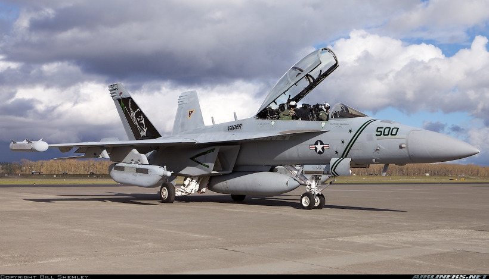
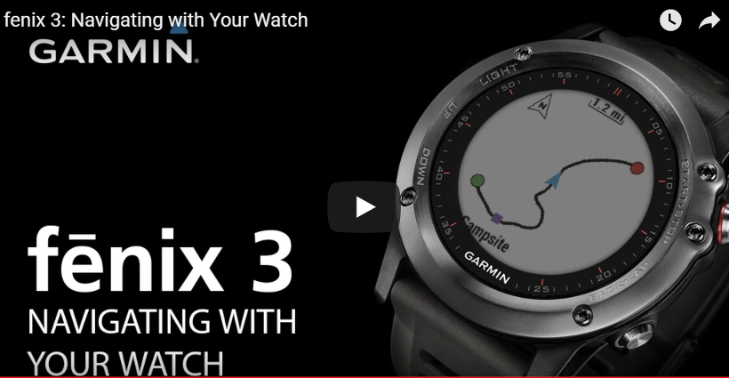
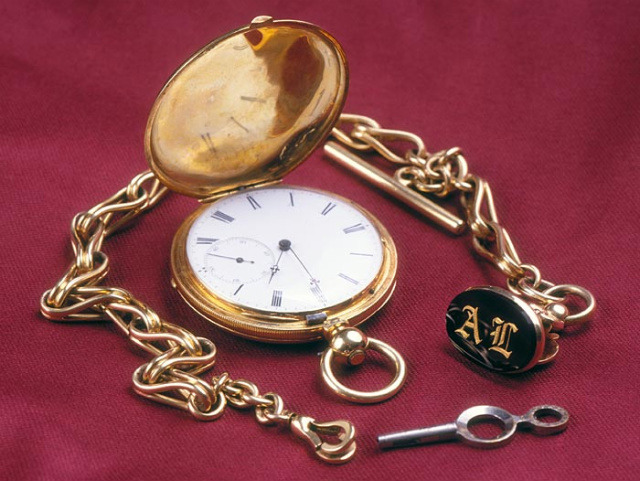
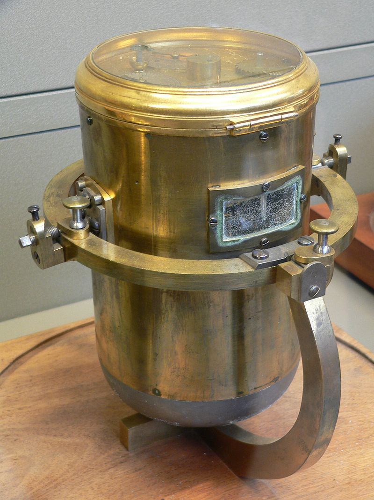
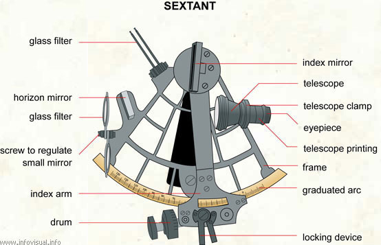
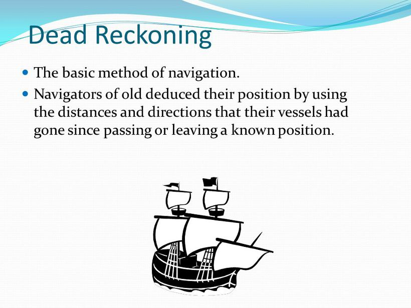
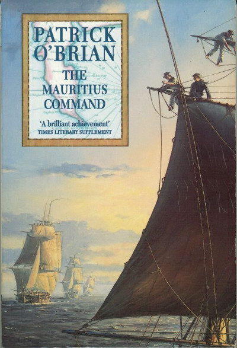
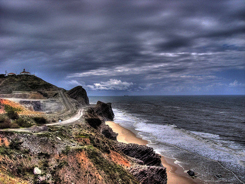
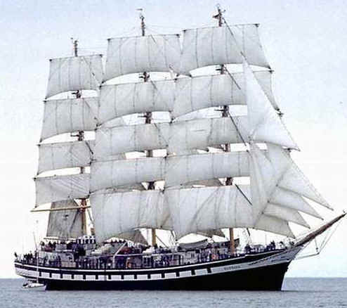

아폴로 호는 왜 좌초했나 - 나폴레옹 시대의 GPS
게시: 2018-02-26T23:48:49+09:00

최근 미군 소속 EA-18G 전자전 전투기가 2만5천 피트 상공에서 비행 중 환경제어시스템(environmental control system)의 고장으로 온도가 마이너스 34도까지 떨어지는 사고가 발생했답니다. 2명의 조종사들이 얼어죽을 정도로 추웠다는 점 외에도, 당장 문제가 발생한 것이 캐노피 유리의 안쪽은 물론 주요 계기판에 불투명한 얼음막이 잔뜩 끼어 계기 비행이 사실상 불가능해졌다는 점이었습니다. 이런 악조건에서도, 동상으로 인한 부상을 빼면 이 기체는 무사히 기지로 귀환했다고 합니다. 어떻게요 ? 놀랍게도, 조종사들이 손목에 차고 있던 450달러짜리 Garmin Fenix 3 스마트 왓치 덕분었다고 합니다. 물론 지상 관제소도 도움이 되었지요. 이 스마트 왓치는 기압과 고도, 그리고 진행 방향을 알려주는 기능이 있는데, 조종사들은 그 기능을 이용했던 것입니다.

(450달러짜리 스마트 왓치가 2명의 조종사와 6800만달러짜리 EF-18G 전자전기를 구했습니다 !)
이 스마트 왓치는 조종사들이 자기들 돈으로 산 것이 아니라 해군에서 일괄 지급한 것이라고 합니다. 원래는 이런 비상시 네비게이션용으로 나눠준 것은 아니고, 혹시라도 계기 고장으로 기내 산소압 등이 비정상적으로 떨어질 때 계기판에서 그걸 감지 못하는 경우에도 조종사들이 경고를 받을 수 있도록 하기 위한 것이었답니다. 해군에서는 아직도 이 스마트 왓치로 전투기의 비상시 네비게이션이 가능하다고는 인정하지 않는다고 합니다.
나폴레옹 시대에는 인공위성을 이용한 GPS도 저런 스마트 왓치도 없었지만 당시 해군도 5대양을 잘만 돌아다녔습니다. 어떻게 그게 가능했을까요 ? 두가지 도구와 현재 고등학교 수준의 수학과 지구과학 정도를 알면 충분히 가능했다고 합니다. 그 두가지 도구란 정밀한 시계와 육분의, 즉 섹스탄트(sextant)였습니다.
섹스탄트는 좀 이상한 물건이라고 치고, 당시엔 시계가 흔했을까요 ? 글쎄요, 당시 회중 시계는 신사들에게는 어느 정도 필수품이었고 특히 장교들에게는 상당히 꼭 필요한 물건이었습니다. 그렇다고 군대에서 장교들에게 지급되는 물건도 아니었습니다. 하긴 뭐 당시 장교들은 군복부터 검과 권총, 말까지 모두 자기 돈으로 마련해야 했는데, 하물며 시계야 말할 것도 없지요.

하지만 장교들이라고 다 유복한 집안 출신은 아니었습니다. 가난한 홀어머니가 집안 대대로 내려오는 패물과 접시까지 다 팔아서 소위 계급과 중고품 군복, 낡은 칼 한자루를 간신히 마련해준 덕택에 전쟁터에 나올 수 있었던 가난한 소위들이 회중 시계를 가지고 있으리라고 생각하면 곤란하겠지요. 실은 그래서 가난한 집안 출신이 장교가 되는 것은 본인에게나 주변 장교들에게나, 특히 부하들에게 무척이나 민폐를 끼치는 일이었습니다. 인솔 장교가 가난하여, 신사라면 다들 가지고 있어야 할 회중 시계가 없는 바람에 부대 전체가 작전에 늦게 된다면 얼마나 짜증나는 일이겠습니까 ?
사실 당시는 그렇게까지 정확한 시간이 중요한 것은 아니었습니다. 어차피 무전기도, 전화도, e-mail도 없던 시대에, 시간은 대충만 맞추면 되는 것이었습니다. 당시 시계들 중에는 아직 초침이 없는 시계도 많았습니다. 초침이 있는 시계는 꽤 비쌌거든요. 사실, 스프링으로 동작하는, 어느 정도 현대적인 형태의 시계는 15세기 초에 나왔는데, 당시에는 시침만 있었고 분침은 없었다고 합니다. 하지만 사람은 항상 시간에 쫓기는 존재인지, 불과 100년도 안되어, 15세기 후반에 이미 분침이 달린 시계가 개발되었습니다.
육군 장교들은 뭐 사실 분 단위로 시간을 재야 할 만큼 시간의 정확성이 중요하지는 않았습니다. 뭐 공격 개시야 1~2분 늦으면 어떻습니까 ? 어차피 병사들이 발로 걸어가서 공격하는 건데요 뭐. 하지만 분 단위는 커녕 초 단위의 정확성이 중요했던 사람들이 있습니다. 바로 대양을 항해하는 상선들과 군함들이었습니다.

(1782년 경의 페르디낭 베르뚜 크로노미터입니다.)
그런 선박에서는 크로노미터(chronometer)라는 장비가 필수였는데, 이건 사실 그냥 매우 정밀한 시계였습니다. 크로노미터는 대략 오차가 영국에서 자메이카까지 항해하는 동안, 그러니까 약 1달 정도에 30초 정도 났다고 합니다. 이 시계는 대양을 항해하면서도, 항상 영국 그리니치를 기준으로 시간이 맞춰져 있었습니다. 항해 중에 그 지점에서 태양이 가장 높은 곳 즉 중천에 오는 순간, 그 때의 그리니치 기준시를 크로노미터를 통해 알면 그 지점의 경도를 측정할 수 있었습니다. 지구는 하루 한번 자전하니까, 360도를 24시간만에 주파합니다. 즉, 그리니치 기준시와 1시간 차이가 날 때마다 경도로는 15도 차이가 나는 것입니다. 의외로 매우 간단하지요 ?
크로노미터로 경도를 알 수 있다면 아마 다른 도구인 섹스탄트로는 위도를 알 수 있겠지요 ? 맞습니다. 역시 해가 중천에 도달하는 순간 수평선과 태양의 각도를 재면 됩니다. 그리고 그 측정각을 천문학자들과 지도 제작자들이 미리 만들어 놓은 표와 비교해보면 그 지점의 위도를 알 수 있습니다. 달력 날짜에 따른 태양의 각도는 위도에 따라서 다 조금씩 다르니까요. 가령 12월 21일 정오에 태양의 각도를 쟀더니 완전 수직인 90도였다면, 계신 곳의 위도는 23.5도입니다.

(섹스탄트, 즉 육분의입니다.)
섹스탄트도 나름 정밀한 도구였고 가격이 꽤 비쌌겠습니다만, 크로노미터는 정말 비쌌답니다. 그래서 당시 영국 군함 1척당 크로노미터는 딱 1개씩만 지급이 되었습니다. 하지만 이게 고장나거나 파손되면 어떻게 합니까 ? 이때도 결국 유전무죄 무전유죄였습니다. 돈많은 함장의 경우, 사비를 털어서 예비 크로노미터를 샀습니다. 그럴 경우 해군성에서는 추가로 2개의 크로노미터를 지급해주었다고 합니다 ! 결국 돈많은 함장들보고 사비를 털어 국방력에 보태라는 무언의 압력이었던 것이지요. 그러니까 육군에서 시계도 없는 가난한 대위는 상관이나 부하들이나 모두 싫어했던 것과 동일하게, 기난한 함장은 다 싫어했겠지요. 험한 바다로 나가는데, 함장이 가난뱅이라서 크로노미터가 배에 딱 1개 뿐이라면 얼마나 다들 불안해했겠습니까 ?
자, 정리하면 위도를 알려면 육분의, 경도를 알려면 시계가 필요한 것입니다. 이렇게 해서 당시 기술로도, 불과 1~2km의 오차 범위 내에서 정확한 선박의 위치를 파악할 수 있었습니다. 하지만 결국 두 방법 모두 태양이 있어야 가능했습니다. 따라서 폭풍우가 며칠동안 계속되거나, 재수 없이 며칠동안 연속으로 하필 정오 무렵마다 먹구름이 잔뜩 낀다면, 선박의 위치를 알 방법이 없어지는 것이지요. 이런 경우에도 당장 큰 일이 나는 것은 아니었습니다. 최소한 나침반은 구름 밑에서도 작동하는 것이었고, 또 착실한 선장이 정상적으로 선박을 몰고 있었다면 선박의 속도를 주기적으로 측정하고 있었을테니, 해도와 각도기, 컴퍼스를 가지고 마지막 관측을 한 지점으로부터 대략 선박이 어느 정도 이동했는지 짐작이 가능했습니다. 이렇게 실제 관측 없이 계산만으로 현 위치를 추산하는 항법을 추측 항법(dead reckoning)이라고 합니다. 물론 암초가 여기저기 널려있는 해안 근처를 바싹 붙어서 항해하는 상황에서는 이런 추측 항법을 써서는 안 되겠으나, 대서양이나 태평양 한복판에서는 괜찮았습니다.

그러나 생각하지 않은 곳에서 사고가 일어나는 법입니다. 이 사고 이야기는 선박에서의 식수 문제에서 시작됩니다. 대항해 시대의 선원들은 언제나 물 부족으로 크게 고생했을 뿐만 아니라 숱한 생명이 물 부족으로 바다 위에서 사라졌습니다.
The Happy Return by C.S. Forester (배경: 180X년 파나마 태평안 연안의 영국 군함) ---
혼블로워 함장은 주갑판으로 내려오면서 또 한 무리의 선원들이 같은 일을 하고 있는 것을 보았다. 선원들은 평상시의 어투로 이야기하고 있었고, 두번인가 웃음소리를 들었다. 그건 좋은 일이었다. 그런 식으로 웃으며 잡담하는 선원들은 반란을 일으키지 않기 때문이었다.
사실 혼블로워 함장은 최근 들어 반란의 가능성을 아주 심각하게 걱정하고 있었다. 바다에서 7개월간을 보내다보니 보급품이 거의 다 떨어져가고 있었다. 1주일 전에, 그는 물의 배급을 하루에 3파인트 (1파인트는 0.57리터, 즉 1.71리터에 해당 : 역주)로 제한하기 시작했다. 하루 3파인트라면 소금에 절인 고기와 건빵을 주식으로 하면서 북위 10도 지역에서 지내기에는 정말 부족한 양이었다. 특히 그 물이 통 속에 7개월 간이나 들어있던 것이라서, 절반 정도는 녹색의 부유물이 떠있는 것일 때는 더욱 그랬다.
------------------------------------------------------------------------------
위에 인용한 소설 속 한 장면처럼 당시 선박에서 식수의 질이 형편없었던 것은 주경철 서울대 교수라는 분이 쓴 배 위의 ‘노동자’ 죽음보다 비참한 삶 (http://www.hani.co.kr/arti/society/life/255562.html 참조)이라는 제목의 기사에 따르면 당시에 사용했던 나무 물통 때문이었습니다. 나무널판지로 만들고 그 틈을 뱃밥(oakum)으로 채운 나무 물통은 각종 미생물이 번식하기 딱 좋은 환경이었던 것입니다. 이런 문제를 해결하고자 나온 것이 철제 물탱크였습니다. 그러나 모든 선장과 선원들이 철제 물탱크를 좋아한 것은 아니었습니다.

The Mauritius Command by Patrick O'Brain (배경: 1809년 남아프리카 희망봉) --------
(임시 제독인 commodore로 임명된 잭 오브리 함장이 휘하의 여러 함장들을 불러 모아 모리셔스 제도에 대한 침공 작전 계획에 대한 회의를 가집니다.)
클론퍼트가 말했다. "영광스럽게도 제가 지휘를 맡고 있는 슬룹(sloop)함은 언제든 출항할 준비가 되어 있습니다."
이건 그저 호언장담에 불과했다. 그 어떠한 배도 '항상' 출항 준비가 되어 있지는 않았다. 물과 식량, 화약 또는 포탄을 전혀 쓰지 않았다면 모를까. 오터(Otter) 호는 이제 막 항해에서 귀환한 뒤였다. 그 자리에 모인 모두가 그 사실을 알고 있었고, 클론퍼트 자신도 자기가 무슨 말을 했는지 깨닫자마자 그 사실을 상기해냈다.
하지만 잭은 어색한 침묵을 짧게 자르고 회의를 계속 진행하여, 핌 함장과 코벳 함장으로부터 좀더 이성적인 보고를 받았다. 그 보고에 따르면 시리우스(Sirius) 호는 대체적으로 준비 상태가 양호했지만 뱃바닥에 각종 해양 생물이 잔뜩 달라붙어 청소가 꼭 필요한 상태였고, 식수 탱크 때문에 큰 곤란을 겪고 있었다. 이 식수 탱크는 플리머스 항에서 반강제로 설치된, 새로 유행하는 철제 탱크였는데, 깜짝 놀랄 정도로 줄줄 물이 샜다.
"제가 무엇보다 싫어하는 게 하나 있다면 말입니다," 핌 함장이 탁자 둘레 사람들을 쳐다보며 말했다. "그건 혁신(innovation)입니다."
시리우스 호는 탱크가 새는 곳을 찾아내려 선저를 뒤지고 있었고, 아무리 애를 쓰고 선원들을 혹사시킨다고 해도, 일요일 이전에 출항 준비를 끝내기는 어려워 보였다.
------------------------------------------------------------------------------------
핌 함장이 줄줄 새는 철제 식수 탱크 때문에 혁신 전체를 싫어하게 된 것은 무척 비극적인 일입니다. 하지만 당시 아직 스텐레스 스틸이나, 하다 못해 아연도강판처럼 부식방지 처리 기술이 없던 시절에, 바다를 항해하는 목조 군함에 철제 식수 탱크를 장착한 것은 좀 에러라는 생각이 들기는 합니다.
이 철제 식수 탱크가 일으킨 문제는 핌 함장의 혁신에 대한 부정적인 이미지 뿐만이 아니었습니다. 1804년 영국 해군의 36문짜리 5급 프리깃 함인 아폴로(HMS Apollo) 호의 좌초 사건에도 (적어도 공식 기록 상으로는) 이 철제 식수 탱크가 결정적인 역할을 했습니다.
1804년 3월 26일, 아폴로 호는 28문짜리 프리깃 함 캐리포트(Caryfort) 호와 함께 69척의 상선단을 이끌고 아일랜드에서 서인도 제도로 출항합니다. 풍향을 고려한 당시의 전형적인 항로는, 스페인 앞바다까지 곧장 남하하여 거기서 서쪽으로 항로를 변경하는 것이 보통이었고, 아폴로 호가 이끄는 선단도 그 루트를 따릅니다. 그런데 문제의 사건이 있기 며칠 전부터 날씨가 좋지 않아, 아폴로 호는 별이나 태양을 관측하여 위치를 확인하지 못하고 추측 항법(dead reckoning)에 의지하여 항해를 해야 했습니다.
문제의 4월 2일 새벽, 어둠 속에서 아폴로 호는 강한 충격과 함께 좌초해버립니다. 처음에는 해도에 기록되지 않은 미지의 함초에 걸렸다고 생각되었습니다. 아폴로 호에서 계산했던 위치는 해안에서 적어도 60km 떨어진 곳이었거든요. 그러나 날이 밝고 보니 놀랍게도 자신들은 포르투갈 해안의 몬데고 곶(Cape Mondego) 300~400m 앞바다에 좌초한 것이었습니다. 뿐만 아니라, 아폴로 호의 뒤만 졸졸 따라오던 상선들 중 무려 40여척이나 함께 좌초를 당해버렸습니다.

(현대의 몬데고 곶입니다. 왼쪽 언덕에 보이는 작은 건물이 등대...)
이 사고로 인해 아폴로 호에서만도 250 여명의 승무원 중 함장을 포함한 60여명이 사망/실종되고, 상선들에서도 약 100여명의 선원들이 목숨을 잃었습니다. 사망의 원인은 좌초시의 충격보다는 좌초된 이후의 추위, 굶주림 및 갈증, 그리고 주로 눈 앞에 보이는 육지로 헤엄이나 뗏목으로 건너가려다 익사 내지 실종된 것이었습니다.
향후 이루어진 군법 회의에서, 실종된 딕슨 (John William Taylor Dixon) 함장을 비롯한 항법사 및 해군 장교들은 모두 무죄를 선고 받습니다. 좌초의 주 원인은, 출항 전에 설치된 철제 식수 탱크의 자기력 때문에 나침반이 영향을 받았기 때문이라고 설명되었습니다. 왜 그런 결론이 내려졌는지는 공식 문서에 나와 있지 않습니다. 그러나, 실제로 주철제 물탱크가 나침반에 그렇게까지 큰 영향을 줄 수 있는지는 대단히 의심스럽습니다.
철제 식수 탱크는 이런 사건에도 불구하고 대세로 받아들여져, 19세기 중반 이후의 선박들은 모두 이런 물탱크를 장치했습니다. 가령 미국의 2200톤 급 쾌속 범선(clipper)인 '바다의 여제(Empress of the Sea)' 호에는 6000 갤런짜리 철제 식수 탱크가 장착되어 있었습니다. 이를 하루 3.4리터의 배급량으로 환산하면, 100명의 선원에게 약 66일간 식수를 제공할 수 있는 양입니다. 당시 쾌속 범선이 대서양을 건너는데 약 1달 정도가 걸리던 것을 생각하면 충분한 양이라고 할 수 있습니다.

(범선이 갈때까지 다 가면 이런 클리퍼로 발전합니다. 바람 좋은 날의 평균 시속이 무려 30km... 평균 시속 11~12km였던 나폴레옹 시대 전함들에 비하면 거의 제트기 수준...)
자, 당시의 군인이나 선원들은 그렇다고 치고요, 당시 유럽의 서민들은 어떻게 시간을 맞췄을까요 ? 시골에서 소를 치고 밀 농사를 짓는 농부들은 정확한 시간 같은 것은 필요없었습니다. 따라서 패스. 하지만 19세기 중반 즈음 가면서, 산업화가 진행되자, 문제가 심각해졌습니다. 이제 서민들은 목가적인 농장으로 일하러 가는 것이 아니라, 정확한 출근 시간을 지켜야 하는 공장으로 일하러 가야 했습니다. 하지만 여전히 회중 시계는 고사하고 벽 시계도 서민들에게는 지나친 사치품이었습니다. 그래서 결국 어떻게 출근 시간을 맞췄냐고요 ? 여기엔 좀 슬픈 기록이 있습니다.
19세기 중반, 영국 의회의 어떤 위원회에서, 당시 공장에서 일하던 어떤 10대 초반의 소녀를 증인으로 인터뷰를 했습니다. 그 기록 중에, 바로 그런 내용이 나옵니다. 어떻게 출근 시간을 맞췄느냐고 물으니까, 그 소녀는 어머니가 별을 보고 대략적인 시간을 짐작해서 깨워주었다고 대답합니다. 공장에 지각하면 돈을 제대로 못받기 때문에 새벽 일찍부터 공장 문 앞에서 기다렸다는 것입니다. 그러면서, 소녀가 덧붙이기를, 비가 내리는 날은 어머니가 시간을 잘못 맞췄기 때문에 가끔씩은 비내리는 추운 새벽 2시간이나 일찍 공장에 도착해서 벌벌 떨며 공장문이 열리기를 기다리기도 했다고 합니다. 결국 그 인터뷰 기록은 가혹한 노동 조건에 대해 차마 말을 잇지 못하고 소녀가 목이 메이는 것으로 끝이 납니다...
Source : https://www.quora.com/How-does-one-use-a-sextant-to-determine-a-ships-position-at-sea
https://www.quora.com/How-does-one-use-a-sextant-to-determine-a-ships-position-at-sea
https://en.wikipedia.org/wiki/Marine_chronometer